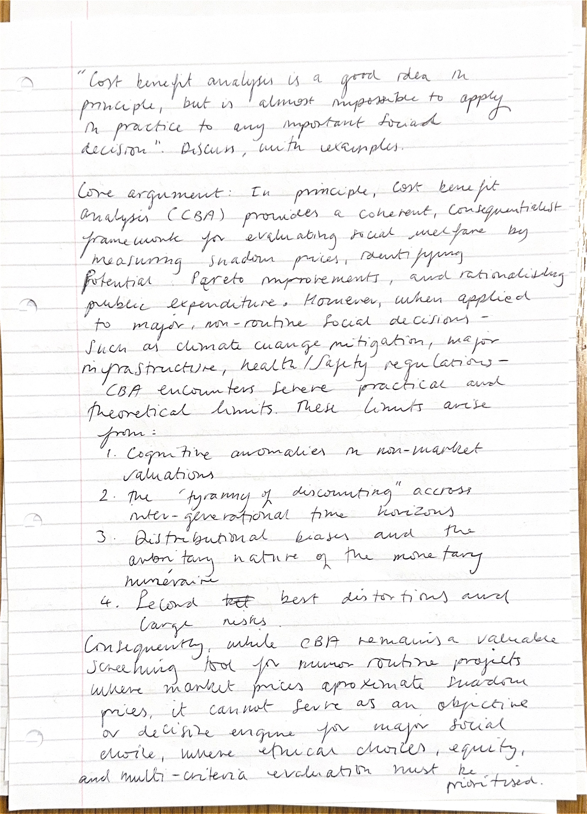
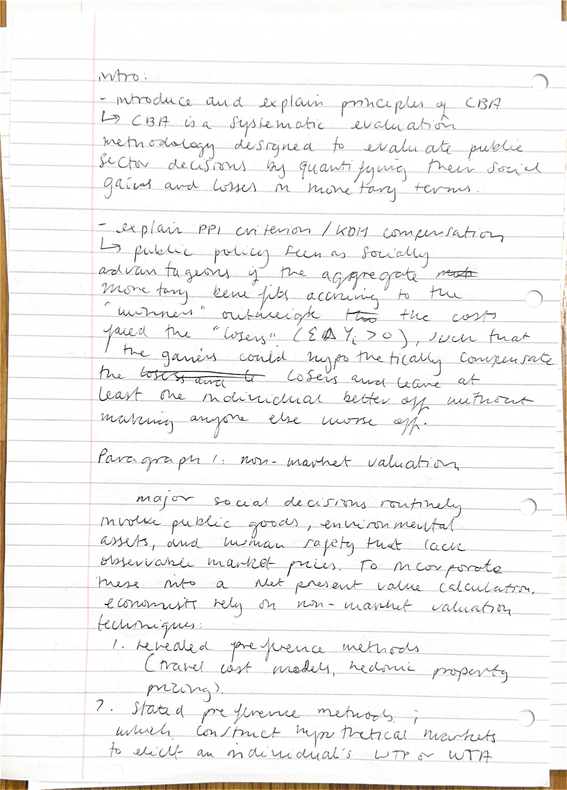
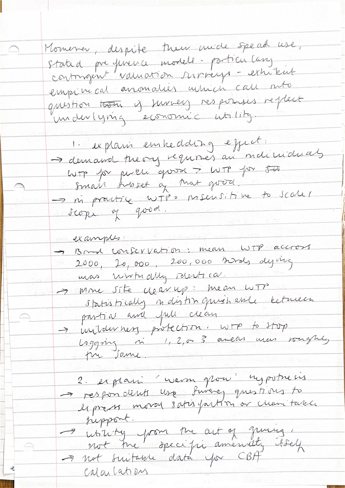
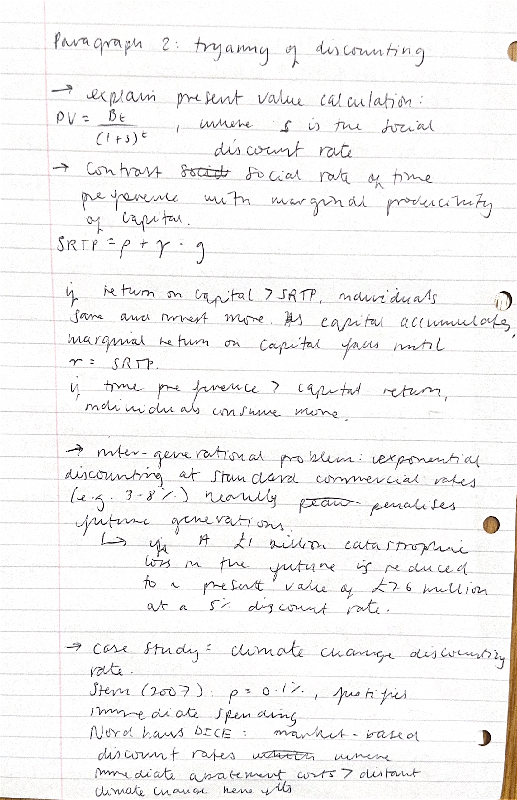
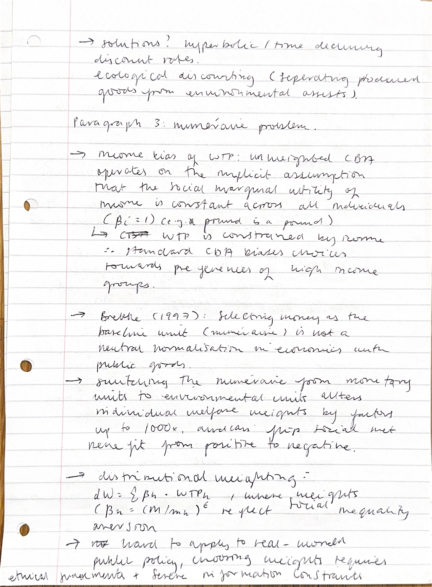
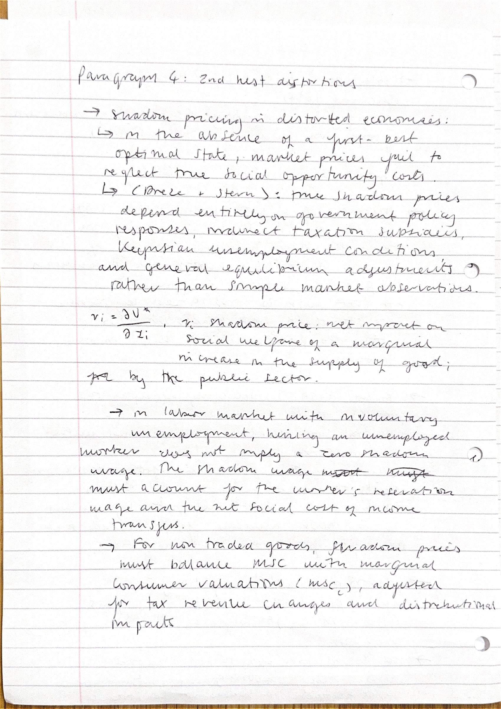
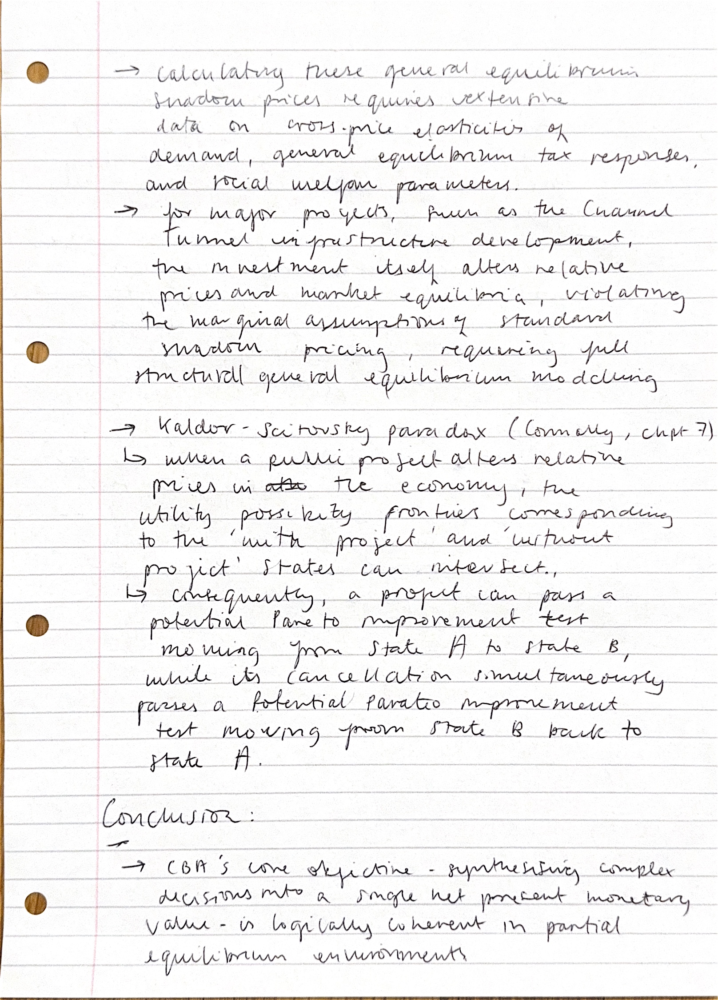
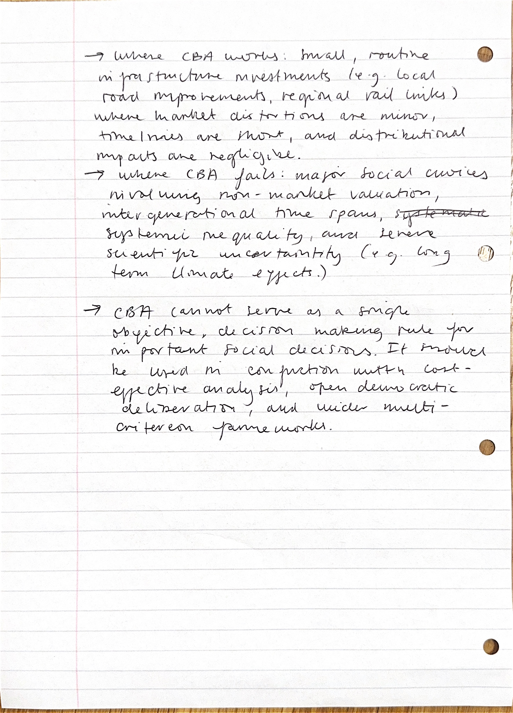

Cost-Benefit Analysis
Week 1 • Michaelmas 2026 • Tutor: Dr Richard Povey
Tutorial Essay
✦ “Cost-benefit analysis is a good idea in principle, but it is almost impossible to apply in practice to any important social decision.” Discuss, with examples. ✦
Essay (marked)
📝 “Cost-benefit analysis is a good idea in principle, but it is almost impossible to apply in practice to any important social decision.” Discuss, with examples.








1 / 8
Reading List
Week 1: Cost-Benefit Analysis
Choosing, valuing and discounting costs and benefits; applications to valuation of a human life. * = particularly recommended reading in your tutor's Work Scheme.
Core Textbooks
- *Connolly and Munro, Chapters 5, 7, and 24.
- *Hindriks and Myles (2nd edition), Chapters 25, 26.
General Reading
- Bellinger, W. (2007), The Economic Analysis of Public Policy, Routledge. Boadway, B. and N. Bruce (1984), Welfare Economics, Chapter 10.
- Cullis, J. and P. Jones (1992), Public Finance and Public Choice, McGraw Hill, Chapter 6.
- *Diamond, P. A., & Hausman, J. A. (1994). Contingent valuation: Is some number better than no number?. The Journal of Economic Perspectives, 8(4), 45-64.
- Dreze, J. and Stern, N.H. (1987), The Theory of Cost-Benefit Analysis in Auerbach, A.J. and Feldstein, M.S. (eds.), Handbook of Public Economics, Volume II, North-Holland.
- Mishan, E. and E. Quah (2007), Cost Benefit Analysis, Routledge.
- Pearce D., G. Atkinson, and S. Mourato (2006), Cost Benefit Analysis and the Environment: Recent Developments, OECD Publishing.
Choosing and Valuing Costs and Benefits
- *Brekke, K. (1997), “The Numeraire Matters in Cost-Benefit Analysis”, Journal of Public Economics, 64(1):117-23.
- Pollak, R.A. (1998), “Imagined Risks and Cost-Benefit Analysis”, American Economic Review, P and P, May, 376-380.
- Stern, N. The Structure of Economic Modeling of the Potential Impacts of Climate Change: Grafting Gross Underestimation of Risk onto Already Narrow Science Models Journal of Economic Literature, 2013, 51, 838-59.
- Murphy, K. And R. Topel (2006), “The Value of Health and Longevity”, Journal of Political Economy, 115(4): 871-904.
- Zweifel, P. and F. Breyer (1997), Health Economics, OUP, Chapter 2.
- See also the Symposium on Contingent Valuation in Journal of Economic Perspectives, 8(4), (1994), in particular the article by Diamond & Hausman.
Discounting Costs and Benefits
- Flemming, J. and C. Mayer (1997), “The Assessment: Public Investment”, Oxford Review of Economic Policy, 13(4): 1-11.
- Groom, B., Hepburn, C., Koundouri, P. and Pearce, D. (2005), “Declining Discount Rates: The Long and Short of it”, Environmental and Resource Economics, 32(4): 445-93.
- HM Treasury (2003), Green Book: Appraisal and Evaluation in Central Government, especially Annex 6, at http://www.hm-treasury.gov.uk/d/green_book_complete.pdf
- Giglio, S.; Maggiori, M. & Stroebel, J. Very Long-Run Discount Rates, National Bureau of Economic Research, 2014, http://www.nber.org/papers/w20133
Past Exam Questions
- What is the effect of higher interest rates on cost-benefit evaluation of public projects? (2025, Part A)
- The government’s ‘Levelling up’ strategy aims to spread economic activity more equally across the UK. Describe how this could be done through public investment. What are the difficulties in determining whether such projects should be undertaken? (2024)
- The country of Dardan has a strait that serves as an important international shipping lane and on which it charges tolls. This strait has recently become congested. The government is considering constructing a canal that runs parallel to the existing strait. How should the government decide whether to undertake this project? What considerations make this public project more difficult to evaluate than a similar private project? (2022)
- What is the “Value of a Statistical Life”? Is it possible to put a value on improvements in health, without assuming that the lives of the chronically ill are worth less than those of the healthy? (2020)
- 5% of global deaths, and 6% of the global burden of disease, are attributable to alcohol. How would you assess the benefits of a policy to reduce alcohol use? What might be the costs of such a policy, even if well-designed? (2019)
- Consider two neighbouring countries X and Y. The government of X considers building a border wall between X and Y with the aim of reducing illegal immigration from Y to X. Propose a cost-benefit analysis from the point of view of country X for the wall if it is funded out of an increased income tax on X’s workers. How does your analysis change if the wall is funded out of a tariff on all goods that Y exports to X? (2017)
- Where should the government allow the building of an additional runway, at Heathrow or at Gatwick? Does your conclusion change if the UK income distribution is taken into account (given that average incomes of residents in the areas close to Heathrow are generally higher than those close to Gatwick)? (2016)
- The market interest rate is often used in cost-benefit analyses to discount future payments since it reveals citizens’ preferences. Is the market interest rate the correct rate to use for cost-benefit analysis if citizens discount time in a quasi-hyperbolic way (Laibson 1997)? Use a simple two-period model to explore whether the social discount rate should be higher, lower or identical to the revealed discount rate. (2015)
- How should the interest rate be chosen when evaluating measures against climate change? (2014)
- Assess what policy makers can learn from cost-benefit analysis when market prices for the relevant costs and benefits do not exist. (2013)
- What are the alternatives to contingent valuation when valuing the costs and benefits of a public policy project? Assess the advantages and disadvantages of these alternatives. (2012)
- Assess the claim that “a correct valuation of health advances must account for the induced effect on future costs.” (Murphy and Topel, 2005) (2009)
- Consider a town where the water supply is contaminated with a substance that local residents perceive to be harmful but that experts testify to be harmless. It is known that construction of a new water treatment system could entirely remove the contaminant. How should cost-benefit of this investment project proceed? (2008)
- What elements should a local government take into account when making a CBA for public good provision? (2007)
- How should cost-benefit analysis be used in the evaluation of new drug treatments in the NHS? (2006)
- How can the value of a public investment project be measured when market prices are not available? Refer in your answer to projects concerning either (a) the environment or (b) safety. (2005)
- Should public investment decisions be subjected to social cost-benefit analysis more often in developing than in developed countries? (2004)
- “Cost-benefit analysis is a good idea in principle, but it is almost impossible to apply in practice to any important social decision.” Discuss, with examples. (2003)
Notes & Essay Plan
Notes and an essay plan for this topic will go here.